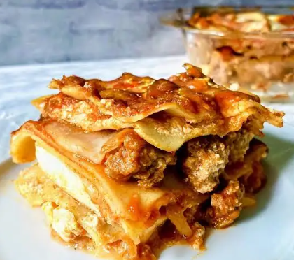

Description
A delicious homemade lasagna made with layers of pasta, meat sauce, and cheese.

Ingredients
- 1 pound ground beef
- 1 onion, chopped
- 2 cloves garlic, minced
- 1 (28 ounce) can crushed tomatoes
- 2 (6 ounce) cans tomato paste
- 2 (6.5 ounce) cans canned tomato sauce
- 1/2 cup water
- 2 tablespoons white sugar
- 1 teaspoon dried basil leaves
- 1/2 teaspoon fennel seeds
- 1 teaspoon Italian seasoning
- 4 tablespoons chopped fresh parsley
- 1 teaspoon salt
- 1/4 teaspoon ground black pepper
- 4 cups ricotta cheese
- 1 egg
- 3/4 teaspoon salt
- 12 lasagna noodles
- 3/4 pound mozzarella cheese, sliced
- 3/4 cup grated Parmesan cheese
Instructions
- Preheat the oven to 180°C (350°F).
- Heat olive oil in a pan and sauté the chopped onion and garlic.
- Add the ground beef and cook until browned.
- Pour in the tomato sauce, season with salt and pepper, and simmer for 15 minutes.
- Cook the lasagna noodles according to the package instructions.
- Layer the noodles, meat sauce, mozzarella, and Parmesan cheese in a baking dish.
- Repeat the layers until the ingredients are used.
- Bake for 30–40 minutes until the cheese is golden and bubbly.
- Let the lasagna rest for 10 minutes before serving.